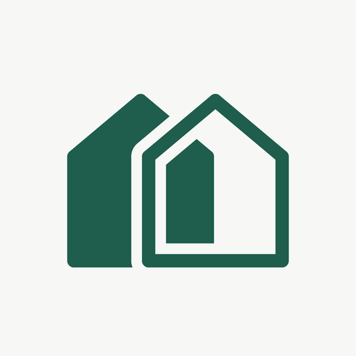

Design system
Field Ledger — the visual language for RoomCompare. Every screen inherits the discipline of the comparison table: ruled lines, aligned columns, tabular figures.
Brand

The logo is used exactly as supplied: two houses in #1f5d4c, the accent, on no background. It is never redrawn, recoloured or given effects. In the nav it is 32px, 8px (space-2) before the wordmark; at 640px and below it stands alone, and the wordmark stays in the link, visually hidden, so it is still read as RoomCompare. The favicon is the same file. Home-screen icons put it, unchanged, on a paper square at three quarters of the icon, since a phone fills a see-through icon with black.
Colour
One accent, used only to mark what is interactive or what is the answer. No gradients. Measured contrast: ink on paper 15.1:1, muted on paper 4.8:1, muted on surface 5.1:1, accent on surface 7.7:1. All pass WCAG AA.
Type
Major third from 16px: 13, 16, 20, 25, 31, 39. Nothing between. The width contrast is functional — Archivo Narrow in table headers buys horizontal room for a criteria column plus three kos columns.
Numerals
| Kos Melati Residence | Rp 1.500.000 |
| Casa Hijau | Rp 1.350.000 |
| Kost Bumi Asri | Rp 1.250.000 |
Tabular figures give every digit the same width, so values of equal length line up digit-for-digit down a column. Values start on the same edge as every label and text value in the interface. This is the one typographic statement the design makes.
Actions
An action keeps its name through the flow: Publish produces a toast that says Published.
Fields
Every survey field says what it needs before it is filled in: a helper line under the control, a live count where there is a limit, and an ⓘ beside the label that opens the field's How to fill panel. A 1–4 score describes the chosen level under the scale. A count past its limit turns alert — 1,001/1,000. There are no required badges: the panel's Rules line says what a field needs, and Publish says what is missing.
Survey guidance
Each section opens with one line on what it records, set off by a rule. The ⓘ opens the How to fill panel — beside the ⓘ on a wide screen, a sheet on a phone — which always reads in the same order: what to fill, how to find it, the scores or shots, an example, the rules, a tip. The ? beside the title reopens the Survey guide, which opens by itself before the first new survey.
Comparison ledger
| Criterion | Kos Melati Residence | Casa Hijau | Kost Bumi Asri |
|---|---|---|---|
| Kos information | |||
| Monthly rent | Rp 1.500.000 | Rp 1.350.000 | Rp 1.250.000 |
| Distance to campus | 1,8 km | 2,3 km | 2,8 km |
| Type | Female | Mixed | Female |
| Room | |||
| Cleanliness | Very good (4/4) | Very good (4/4) | Good (3/4) |
| Internet quality | Very good (4/4) | Good (3/4) | Not recorded |
| AC | — | — | ✓ |
| Wardrobe | ✓ | ✓ | ✓ |
| Shared facilities | |||
| Car parking | — | ✓ | — |
One row per facility, so absence and truncation can never be confused. Rows that differ are marked by their label's weight, ink semibold against muted, with no bar or inset rule; identical rows stay quiet. Missing data reads “Not recorded” — different from absent.
Kos picker
Every survey of the user's own and every community survey, each under its source's name in the narrow face that labels table columns. A group with nothing in it says so. The last row of a group drops its rule; the count in the foot updates as kos are picked.
States
No kos recorded yet
Start with the first kos you visited. You can add photos and notes as you go.
Kos Melati Residence
Recording…
Elevation
Delete this survey?
Kos Melati Residence and its 5 photos will be removed from your list.